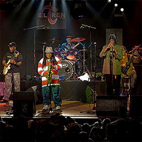
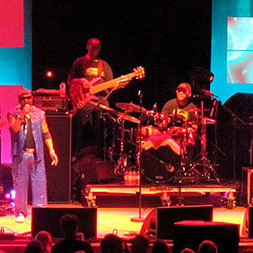
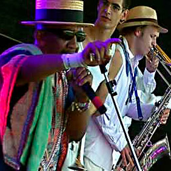

Conoce los grupos del festival

The Skatalites
The Skatalites grupo creado en 1964. El nombre está formado de la mezcla de «The Satellites» con la palabra «Ska»

Toots & Maytals
Toots and the Maytals, originalmente llamados The Maytals, fue un influyente grupo jamaicano de música ska y reggae.

Lauren Aitken
Laurel Aitken un cantante conocido como uno de los creadores de la música ska jamaicana a finales de los años cincuenta.